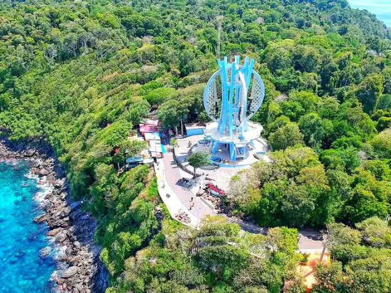
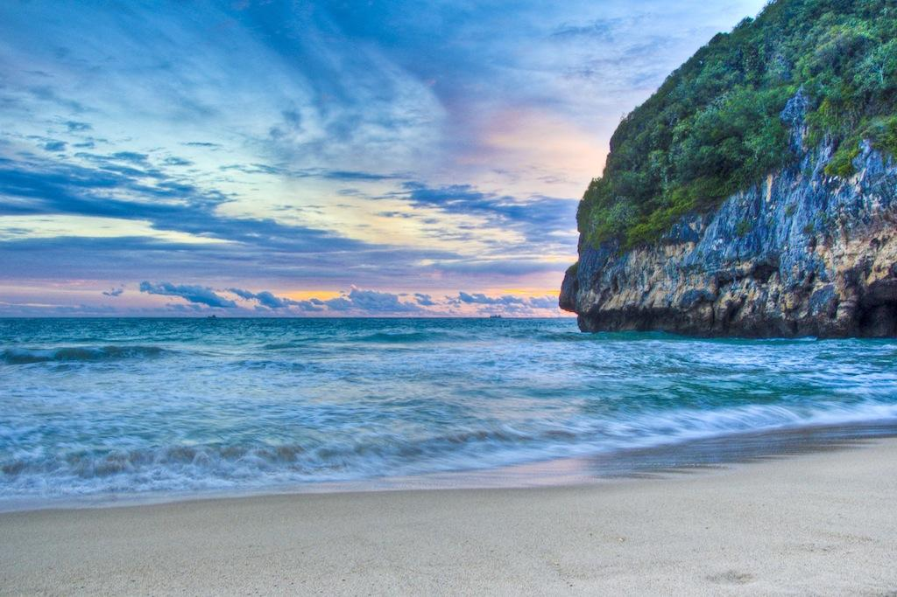
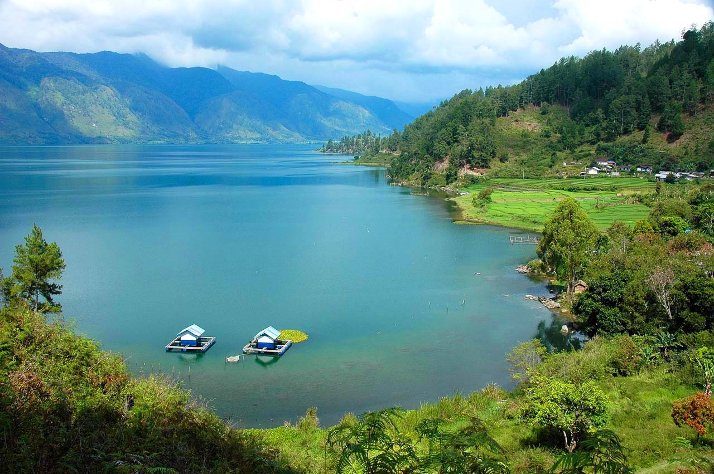

1. Masjid Raya Baiturrahman

Masjid bersejarah di pusat Banda Aceh dengan tujuh kubah dan menara megah. Bangunan ini menjadi simbol ketahanan masyarakat Aceh dan selamat dari bencana tsunami 2004.
Menyusuri Megahnya Situs Sejarah, Menyelami Pesona Surga Bawah Laut yang Memukau.
Masjid bersejarah di pusat Banda Aceh dengan tujuh kubah dan menara megah. Bangunan ini menjadi simbol ketahanan masyarakat Aceh dan selamat dari bencana tsunami 2004.

Museum untuk mengenang korban dan pelajaran dari tsunami 2004. Arsitekturnya unik dengan lorong gelap yang menggambarkan suasana saat bencana terjadi.

Pulau di ujung barat Indonesia yang terkenal dengan snorkeling dan diving di kawasan Iboih dan Pulau Rubiah. Di sini juga terdapat Tugu Nol Kilometer.

Pantai berpasir putih di Aceh Besar dengan ombak yang cocok untuk berselancar dan pemandangan bukit hijau di sekelilingnya.

Danau luas di dataran tinggi Gayo, Takengon. Udaranya sejuk, dan daerah sekitarnya terkenal sebagai penghasil kopi Gayo.
| No | Destinasi | Lokasi | Jenis Wisata | Estimasi Biaya |
|---|---|---|---|---|
| 1 | Masjid Raya Baiturrahman | Banda Aceh | Sejarah dan Religi | Gratis (donasi sukarela) |
| 2 | Museum Tsunami Aceh | Banda Aceh | Edukasi dan Sejarah | Rp 5.000 - Rp 15.000 |
| 3 | Pulau Weh | Sabang | Bahari (snorkeling/diving) | Rp 300.000 - Rp 800.000 |
| 4 | Pantai Lampuuk | Aceh Besar | Pantai dan Selancar | Rp 10.000 - Rp 50.000 |
| 5 | Danau Laut Tawar | Takengon, Aceh Tengah | Alam dan Kopi | Rp 20.000 - Rp 100.000 |
Catatan: biaya hanyalah perkiraan dan dapat berubah sewaktu-waktu.
Susun rencanamu melalui halaman Rencana Perjalanan, atau cari inspirasi makanan di Kuliner Aceh.